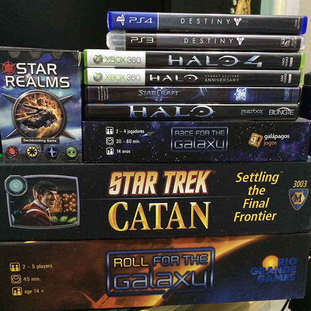
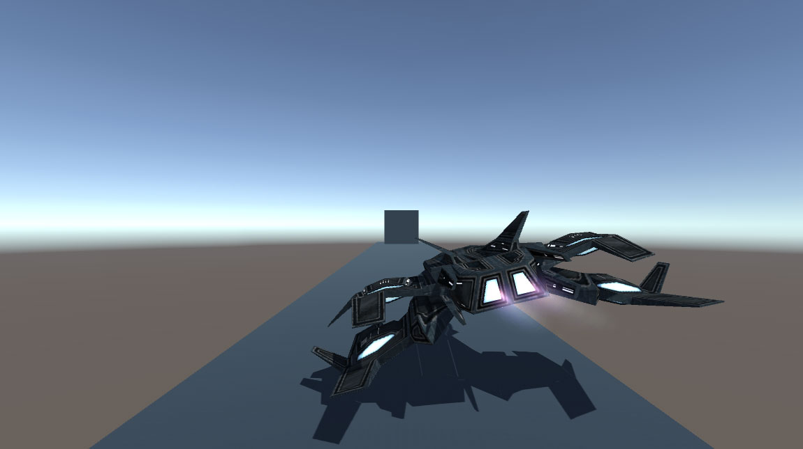

Como eu havia comentado neste post decidi começar um novo projeto no meu tempo livre e colocar em um repositório público no GitHub para quem quiser acompanhar o desenvolvimento do jogo em Unity. Este é o primeiro de uma série de posts que vão contar detalhes sobre o desenvolvimento deste projeto, fazendo referências aos posts da série como ser um programador de jogos. Neste post, quero contar um pouco sobre como surgiu a ideia para este projeto e onde quero chegar com ele.
Eu sempre fui um fã de jogos com tema de ficção científica, e entre meus favoritos estão as séries Metroid, Starcraft, Halo, Mass Effect, Endless Space, Star Wars: Knighs of the Old Republic e Destiny. Até nos jogos de tabuleiro tenho essa preferência pelo tema e gosto muito dos jogos Race for the Galaxy, Roll for the Galaxy, Star Trek Catan, Star Realms, e muitos outros que ainda não tenho. E nem preciso falar que sou fã de Star Wars, Star Trek, Doctor Who, Battlestar Galactica e Firefly. Muitos dos meus livros favoritos são dos autores Isaac Asimov e Douglas Adams.

Por causa de todas estas referências acima decidi iniciar o desenvolvimento de um jogo de ficção científica. Ainda não defini como o jogo será, por isso iniciei o desenvolvimento de um playground para explorar ideias. O playground é um pouco diferente de um protótipo por que nele o objetivo é a exploração, e não a validação de uma mecânica ou ideia.
Uma coisa eu já defini: quero que tenha uma nave para o jogador pilotar e que exista combates e exploração no espaço. Por isso, iniciei o projeto com um modelo 3D de nave gratuita que baixei na Asset Store da Unity e fiz ela atirar "bolas de ping-pong" em um cubo, enquanto se move. Como estou explorando a mecânica, os scripts utilizados até agora não foram escritos pensando em serem reutilizados no jogo. Outro detalhe definido é o nome do jogo: Final Frontier; uma referência a Star Trek e minha homenagem ao Leonard Nimoy.

O meu objetivo é desenvolver todo o protótipo do jogo utilizando a Unity e deixando o projeto público no GitHub, por isso todos recursos e plugins utilizados serão sempre gratuitos e com os devidos créditos adicionados. Se eu decidir que vale a pena investir neste projeto provavelmente irei terminar o desenvolvimento do protótipo e iniciar o desenvolvimento do jogo em um repositório particular, mas isto é algo pra se pensar quando o jogo estiver definido e testado. Durante o desenvolvimento do protótipo pretendo também criar e disponibilizar documentos, como o Game Design Document.
Qualquer feedback é sempre bem-vindo! E se você não conhece algumas das minhas referências, recomendo dar uma olhada pois vale muito a pena! Ah, a imagem da capa foi tirada em uma partida de Star Trek Catan, tão bom quanto o jogo original.